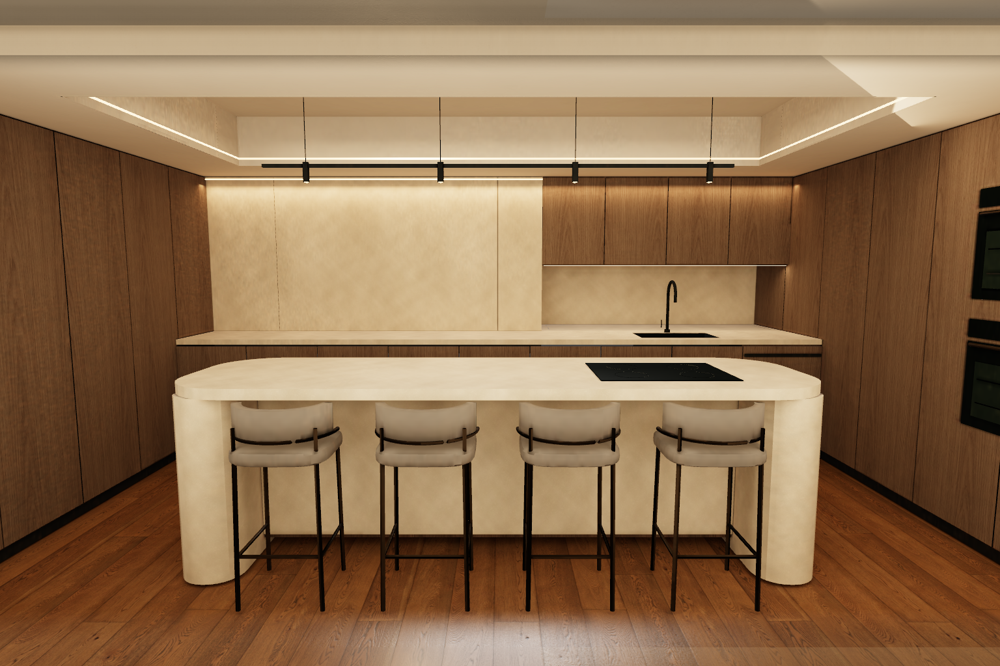
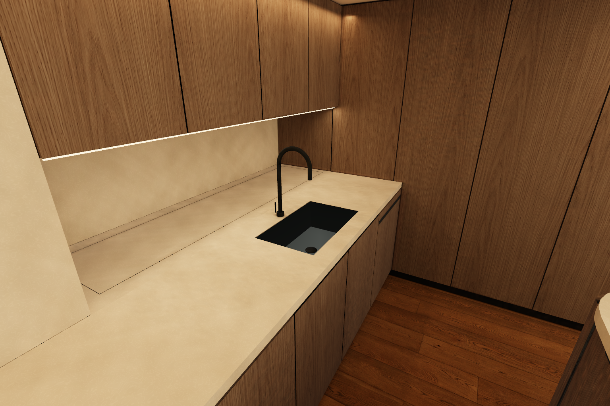
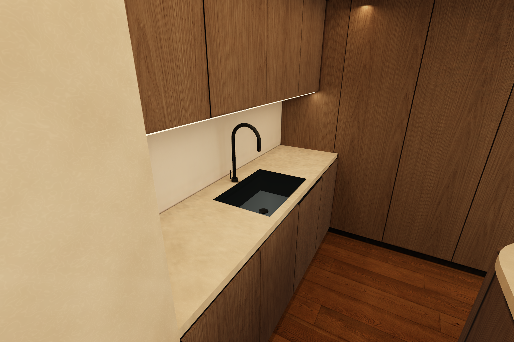

PARQUE CENTRAL · 9 SEPTIEMBRE 2026Armarios a ambos lados, también en Original
Los dos laterales de ambas versiones son ahora armarios altos de roble. La encimera lateral desaparece. En Alternativa, los armarios continúan hasta el fondo y cierran las esquinas; la encimera queda entre ellos. El retranqueo detrás del fregadero incorpora almacenamiento superior en las dos cocinas.
Entrar en Alternativa · Entrar en Original · Pruebas en Chrome · Medidas · Vivienda conservada
Alternativa
 Antes: un lateral bajo
Antes: un lateral bajo
Ahora: armarios altos a ambos lados y en el rincónOriginal
El rincón y el fregadero

Alternativa: rincón con armario y luz inferior
Original: armario menos profundo sobre el fregaderoLos armarios laterales tienen 220 cm de altura y unos 60 cm de fondo. Los del rincón arrancan a 148 cm, dejando 56 cm sobre la encimera y espacio para el grifo. El rincón tiene unos 35 cm de fondo en Original y 60 cm en Alternativa. El alcance cómodo, los herrajes y el acceso al registro necesitan definición constructiva.
Circulación e iluminación
La isla y sus cuatro taburetes conservan su posición. En Alternativa se mantienen 95.9 cm detrás de la isla y 89.6/89 cm entre los frentes laterales cerrados. Las aperturas de puertas y el uso con taburetes ocupados se documentan en las medidas; el recorrido del personaje no certifica comodidad.
Se han recalculado los dos atlas de cocina con Cycles, 4096², 192 muestras y OIDN. Muros, techos, pilares, isla y resto de la vivienda conservan sus geometrías; la luz del salón permanece igual. Los hashes y los desplazamientos deben corresponder con la geometría para cargar cada atlas.
Verificación local en Chrome: 11 vistas y 28 registros de recorrido e interacción, incluido rodear la isla, ir al comedor y alternar Original/Alternativa. Sin errores JavaScript/WebGL. Build y tests aprobados con Node 22.22.0. Build · Tests.
Capturas directas de Chrome, sin retoque. Representación orientativa, sin modelos ni aperturas de fabricante. Commit en main de parque-central; sin publicación adicional del repositorio separado parque-central-3d.